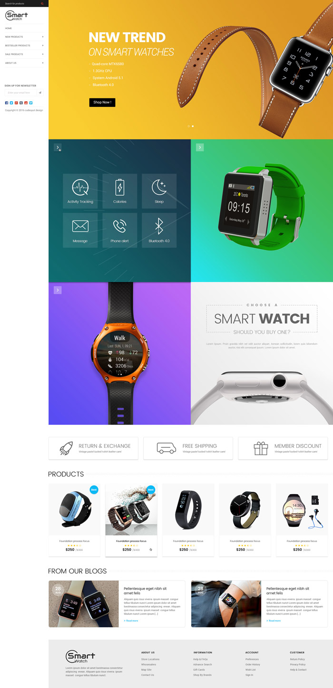
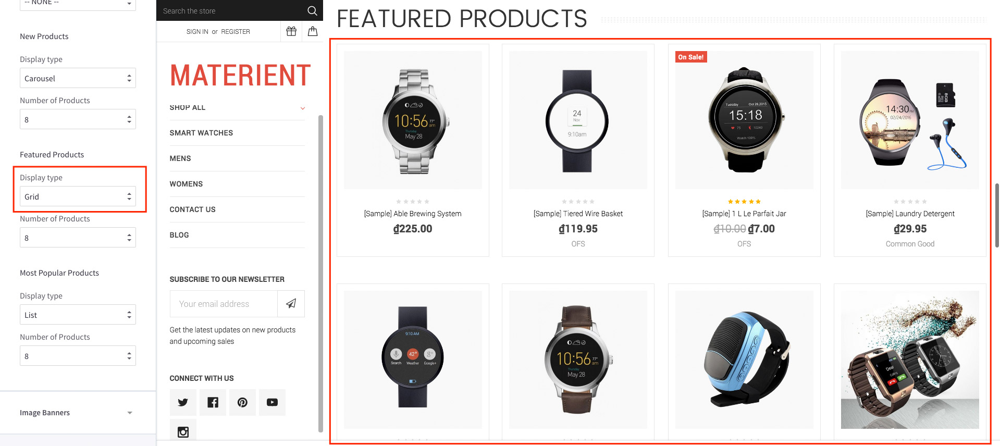
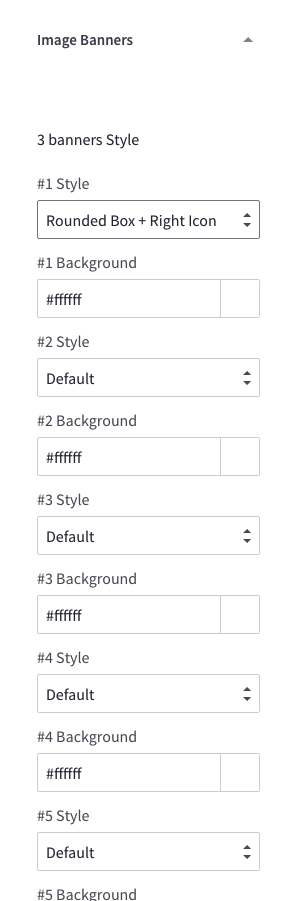
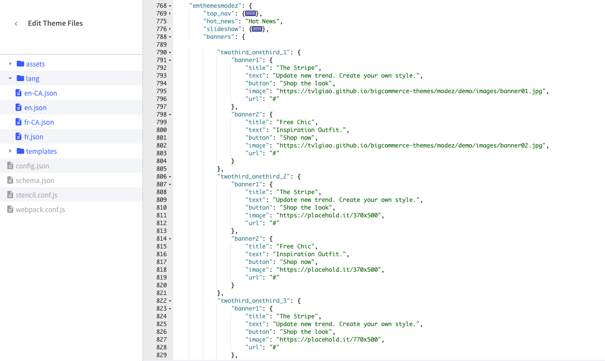
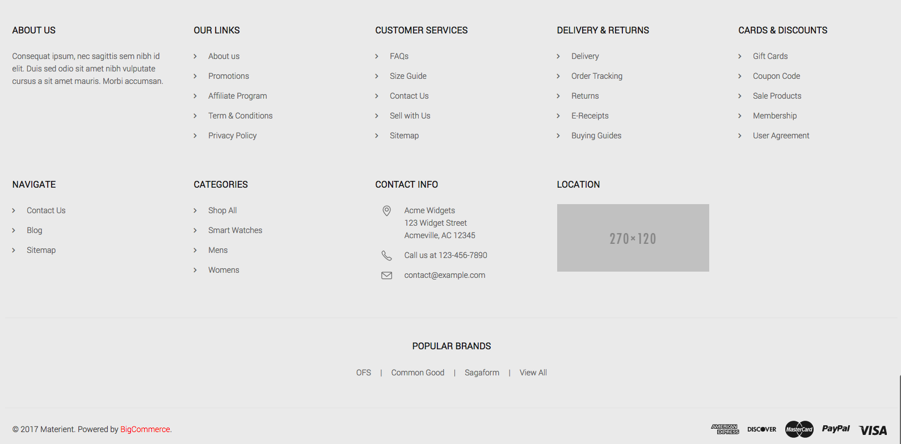
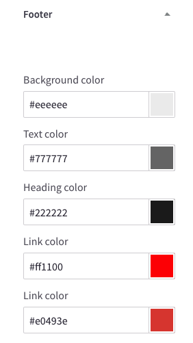

Customization¶
This page will explain all configuration available and how to edit each section appear on theme. Let's view the first homepage.

Top Banner¶

The top banner can be showed / edited in admin page > Marketing > Banners. When you add / edit remember to choose Location is Top of Page.
Colors Customization¶
To customize colors of this section, go to admin page > Storefront Design > My Themes, click button Customize of the current theme to open the Theme Editor.

Look into the options showing below:

Header Sidebar¶

This theme has header on the left sidebar.
Colors Customization¶
To customize colors of the header section, look into the options showing below in the Theme Editor:

Show / Hide newsletter form¶
To show or hide newsletter form on the header sidebar, open Theme Editor > Header section, check or uncheck below option:

Show / Hide social media icons¶

To show or hide the social icons on the header sidebar, open Theme Edtior > Social media icons section, toggle option Header sidebar as below:

Drag and drop social media icons you want to display in admin page > Storefront Design > Design Options:

Main Slideshow / Carousel¶

Edit the slideshow¶
Edit the slideshow in admin page > Storefront Design > Design Options:

Colors Customization¶
To customize color of the slideshow's elements, look into section Carousel in the Theme Editor:

Hide the slideshow¶
To hide the slideshow on homepage, uncheck on the checkbox Show Carousel in section Carousel of the Theme Editor.
New / Featured / Popular Products¶
The theme supports 4 layout type of New Products, Featured Products and Popular Products blocks:
Grid:

Carousel:

List:

Configure a Layout Type of products block & Number of Products to show up¶
In the Theme Editor > Homepage, look into New Products section (or Featured Products, Most Popular Products):
- Display type: Choose appropriate layout type (Grid, Carousel, List).
- Number of Products: Choose number of products to show up.

Show/Hide Quickview button¶
When hover on a product item, Quickview button is showed up by default. To disable this feature, uncheck the checkbox Show Quickview in the Theme Editor > Products section.

Change colors and image sizes¶
In the Theme Editor > Products section, Look into the color options below Product cards, Product Sale Badges, Product cards (Quick search) and Image sizes's options.


Change the heading text¶
To change the heading text (New Products, Featured Products, Most Popular Products), edit the language file, look for the key products > new or featured or top.

Image Banners¶
Theme supports many banner styles:
2 Banners with Metro style:

2 Banners with boxed style:

2 Banners with default style:

3 Banners with rounded border and right icons:

Fullwidth Banner

Change banner style and colors¶
To change banner style and background colors, open Theme Editor > Image Banners section:

Theme support 3 banner layouts:
- 2 banners per row
- 3 banners per row
- full-width banner
You can show up to 5 banner groups with same layout.
Each banner layout can has 4 styles:
- Default
- Boxed
- Metro
- Rounded Box & Right Icon
Edit banner images and text¶
To change banner images and text, edit the language file en.json, find keys emthemesmodez > banners:

Banner layouts:
- group
half_1tohalf_5: represent 5 instances of 2 half-size banners. - group
onethird_x3_1toonethird_x3_5: represent 5 instances of 3 one-third size banners. - group
one_1toone_5: represent 5 instance of fullwidth banner.
Banner image and text:
- key
title: is banner text title. Leave a single space character to hide it. - key
text: is banner content text. Leave a single space character to hide it. - key
button: is button text. Leave a single space character to hide it. - key
image: is banner image. - key
url: is banner link URL.
Image Carousel¶

To edit image and links in this image carousel section, edit the language file, find key emthemesmodez > image_carousel

image*: is link to the image.title*: is image text description.url*: is image link. Leave a single space letter in the value if you want to hide any image.
Recent Blog Posts¶

This block show the most recent blog posts.
Customize heading text and other text¶
To change the heading text, read more text and date format, edit the language file. Find the key blog > recent_posts, posted_by and read_more, edit its values as you want.

Footer¶

Toggle on/off any block¶
You can show or hide any blocks in the Theme Editor > Footer section:

Edit footer contents¶
To edit footer links, edit the language file en.json, find keys emthemesmodez > footer

links_col_1tolinks_col_4: represent 4 links columns.title&url: are link text and URL. Leave a single space character to hide.
Colors customization¶
You can change footer text and background color in Theme Editor > Footer section:

Edit footer template¶
If you want more control about the footer, you can edit the footer template at templates > components > common > footer.html: